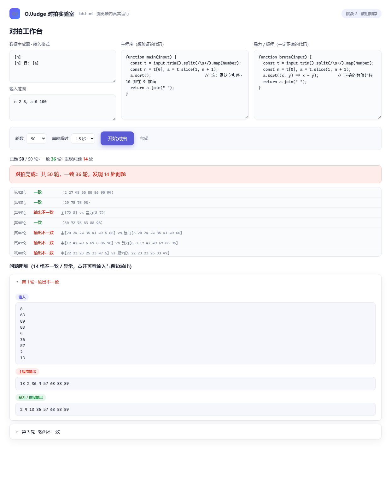
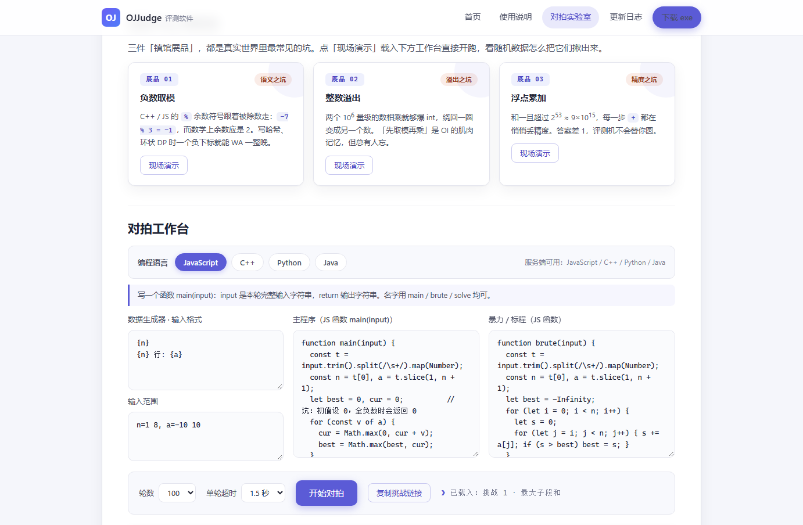

程序约定
JavaScript：每个代码框里写一个函数（名字用 main / brute / solve 均可）。函数收到一个字符串 input（本轮完整输入），return 的内容就是该程序的输出。
C++ / Python / Java：写一个完整程序，从标准输入读数据、把结果打到标准输出。评测时会把该组输入喂给 stdin，并逐字比对 stdout。
生成器格式
每行一段；{变量} 替换为随机值；行首写 {n} 行: 表示该行重复 n 次。范围写法 n=1 8, a=-10 10，支持 1e9 与负数，未定义的变量默认 1~1000。
预设挑战
三个挑战各埋了一个真实 bug（初值、API 误用、浮点精度）。点「载入挑战」填好三块代码，直接点下方「开始对拍」看它怎么被抓出来。
Kadane 初值设 0，全负数时返回 0。暴力 O(n²) 枚举显然正确。
直接 a.sort() 按字典序排，10 会排在 9 前面。暴力用数值比较器。
(a*b)%p 在 a、b 到 1e9 时超出双精度精确范围。暴力用 BigInt。
经典 Bug 博物馆
三件「镇馆展品」，都是真实世界里最常见的坑。点「现场演示」载入下方工作台直接开跑，看随机数据怎么把它们揪出来。
C++ / JS 的 % 余数符号跟着被除数走：-7 % 3 = -1，而数学上余数应是 2。写哈希、环状 DP 时一个负下标就能 WA 一整晚。
两个 106 量级的数相乘就够爆 int，绕回一圈变成另一个数。「先取模再乘」是 OI 的肌肉记忆，但总有人忘。
和一旦超过 253 ≈ 9×1015，每一步 + 都在悄悄丢精度。答案差 1，评测机不会替你圆。
对拍工作台
对拍不中断：哪怕某轮已经不一致，也会跑完全部轮再一次性汇总——和桌面版 OJJudge 的行为一致。程序请确保能自行结束，死循环会被判超时（TLE）而不会卡死本页。
真实运行示例
下面是「挑战 2 · 数组排序」的一次真实运行（50 轮）：主程序直接 a.sort() 按字典序排，一旦数据里出现两位数就露出马脚——第 1 轮输入含 4 和 13，主程序输出 13 2 36 4 57 63 83 89，暴力输出 2 4 13 36 57 63 83 89。50 轮里 14 处不一致全部列出，每组的输入与两边输出都能点开核对。

换语言也一样：上图的「编程语言」一栏可以直接切到 C++ / Python / Java，两个代码框里的示例会同步换成该语言的版本，随机数据的生成始终在浏览器里，只有两个程序交给服务端真编译器跑——所以在网页上对拍的结论，和你下载 exe 在本地对拍的结论完全一致。

把这段输出对照着看，就是「对拍」的全部要义：你不必知道错在哪，只要有一个一定正确的对照程序，数据会替你说出来。桌面版 OJJudge 的对拍流程与此完全一致，还支持 C++ 与问题数据留存。